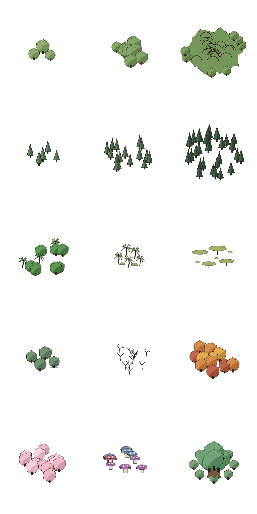
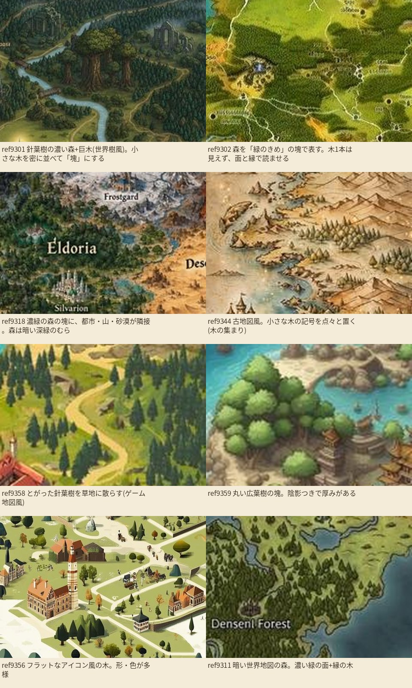

R0 ファンタジー地図は植生をどう見せるか(上位概念・調査 11-21)
概要: ファンタジー地図の森は、①木の記号をまとめて置くか、②森を一つの塊として輪郭と縁取りで描くかの二通りが基本です。どちらも「本当の縮尺の木」ではなく、読み取れる記号として大きめに描きます。衛星画像のような滲みは使いません。これは調べた結果であり、あなたの決定ではありません(決定は R1 以降)。
0. ユーザーが用意した参考の絵(Gemini・11-21 06:04)
ユーザーがGeminiに描かせた「木の見本シート」(15点)です。参考であり、採用は未決です(評価はまだ聞いていません)。

私が目で見たこと(見立て):
- 1列目: 丸い広葉樹(1本〜数本の小さな群れ・重なった塊)と、輪郭のある「森の塊」(縁に木、内側に弧の線)。
- 2列目: とがった針葉樹(まばら・中・密)。
- 3列目: 熱帯(ヤシ+広葉樹)、ヤシ、アカシア風の平たい傘の木(サバンナ)。
- 4列目: くすんだ灰緑の木(地中海・乾燥)、枯れ木、紅葉の木(橙・赤)。
- 5列目: 桜(ピンク)、きのこの森(異世界)、世界樹(大木+小木)。
- どれも「少数本のまとまり」で、1枚が小さな森の記号。上のA(木の記号の集まり)とB(塊)の両方が含まれる。
- いまの私の丸と三角より、種類が多く、異世界の要素(きのこ・世界樹・桜)も入っている。
限界: 白背景のシートで、地図に置いた時の見え方は未確認。縮尺(世界・地方・戦域)のどれ向きかは、あなたの判断が必要です。
0b. 参考の地図から切り取った森・木(11-21 06:34 ユーザー指示)
ハブにある参考の地図(refs/ の62枚)を全部見て、森・木の描写が分かる所を8か所切り取りました。採用は未決です。

- 世界地図に近い森の塊: ref9311(暗い世界地図。濃い緑の面+縁の木)、ref9302(緑のきめの塊)、ref9318(深緑のむら)。木1本は見えず、面と縁で森に読ませる。
- 木の記号の集まり: ref9344(古地図風の点々)、ref9358(針葉樹)、ref9359(丸い広葉樹、陰影つき)、ref9356(アイコン風)。
- 世界樹・巨木: ref9301(針葉樹の森の中に巨木)。
限界: ①どの絵がGemini・MUSEかは、ハブの記録から区別できない(参考の地図は、出所が混ざっている可能性)。②元の絵は幅440〜520pxと小さく、切り取りは拡大しているので粗い。③森の描写が小さい・読み取れない地図は選んでいない(62枚のうち8か所)。④私の見立てで選んだ(あなたが良いと思う森とは違うかもしれない)。
1. 見つかった見せ方(初学者向け)
| 見せ方 | 中身 | 向く地図 | 出典 |
|---|
| A. 木の記号の集まり | 小さな木の絵を、森の範囲に並べる。木1本が、小さな林や森全体を表す。ファンタジー地図で最も多い形。 | 地方〜大陸 | [7][4] |
| B. 森を「塊」で描く | 外側の輪郭を先に決め、縁に木の絵や線を足す。輪郭は閉じていなくてよい。内側は点々の木頭や色の濃淡。 | 地方〜大陸 | [1][2] |
| C. 塗りの面+縁の飾り | 森を一色の面にして、手前の縁に木の記号や幹の線を付ける。 | 大陸〜世界 | [2] |
| D. 上から見た木の塊 | 丸い葉のかたまりを重ねた輪郭線。濃淡・影で厚みを出す。 | 地方 | [3][5] |
2. 絵として良く見せる工夫(調べた範囲)
- 広葉樹は丸み、針葉樹はとがった縦線。形で種類を見分けさせる[1]。
- 色も分ける: 広葉樹は黄みの緑、針葉樹は青みの緑、熱帯は濃く鮮やかな緑[1]。
- 下を暗く、上を明るく。木の根もとに薄い青黒い影を置くと、厚みが出る[1]。
- 地形に沿わせる。森は丘や山の縁をなぞるように描き、縁の飾りで下の地形を見せる[1]。
- 色のむらをつける。均一な緑だと平らに見える[1]。
- 見る大きさで確かめる。拡大するとただの線に見えても、実際の表示サイズで森に読めれば良い[1]。
- 木の形は「丸の重なり」でよい。ランダムに崩しすぎず、上より下が広い自然な形にする[3]。
- 川の近くは、木が川を隠さないよう離す[3]。
3. 縮尺と記号の大きさ
- ファンタジーの広域地図の記号は、実際の縮尺ではなく、見分けやすさを優先して大きく描く。木1本が林や森全体を表す[4]。
- 大陸の地図は、記号の数を絞る(多いと重くなり、見づらい)[4]。
- 一方で、木・川・建物の大きさの関係が合っていないと変に見える。地図の「視点の高さ」に合う描き方を選ぶ[5]。
- 粒子のようなブラシ+影で描く森は、地方の地図に向くとされる[10]。世界全体向けの描き方は、この記事に書かれていない[5]。
4. 昔の本物の地図(参考)
- 古い地図の森の記号は、「木がある」ことを示すだけで、種類の区別がないことが多かった。作者ごとに記号が違った[6]。
- 19世紀の英国の陸地測量部の地図から、針葉樹・広葉樹・混交・低木などを分けて示した[6]。
- ファンタジー地図の一般的な型は、手描き風・限られた色・山は横から見た絵・森は木の記号の集まり、とされる[7]。
5. 限界・確かめられていないこと
- 見つかったのは、主に文章の説明です。絵そのものを私が目で見て比べてはいません。
- トールキンなどの有名な地図の森の描き方は、調べた文章からは分かりませんでした。
- 「世界全体の地図」での森の描き方を直接書いた資料は、ほぼ見つかりませんでした。多くは地方〜大陸の地図向けです。ここは R1 で、あなたと決める必要があります。
- 「異世界らしい植生」(魔の森・世界樹など)の描き方は、この調査では扱っていません。R2 の入力です。
6. R1 への入力(私の見立て・未決)
- いまの丸と三角は、見せ方Aに近い。世界地図では、Bか C(塊+縁の飾り)に寄せるのが候補。
- 決めたいこと: 世界全体の地図で、森を「塊」にするか、記号を並べるか。
出典
- Fantastic Maps: 森の描き方(広葉樹・針葉樹、塊、影、色)
- ProFantasy フォーラム: 森の塗り(個々の木ではなく)
- Here Dragons Abound: 木の形(Part 3)
- ProFantasy フォーラム: 記号の大きさと陸地の大きさ
- ProFantasy: 縮尺の感覚(Glynn Seal)
- スコットランド国立図書館: 昔の地図の森
- Tor.com: ファンタジー地図はどう見えるか
ハブへ戻る